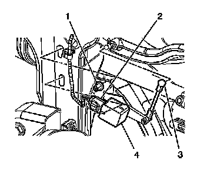

Headlamp Leveling Rear Suspension Height Sensor Replacement
Headlamp Leveling Rear Suspension Height Sensor Replacement
Removal Procedure
1. Raise and support the vehicle. Refer to Lifting and Jacking the Vehicle (Service and Repair) .
2. Remove the right rear tire and wheel assembly. Refer to Tire and Wheel Removal and Installation (Service and Repair) .

3. Disconnect electrical connector (2).
4. Disconnect the ball and socket (3) from vehicle.
5. Remove the bolt (1) from the sensor.
6. Remove the sensor from the vehicle.
Installation Procedure
1. Position the sensor (3) to the vehicle.
2. Install the bolt (1) to secure the sensor (4) to the vehicle.
Tighten the bolt to 9 N.m (80 lb in).
3. Install ball and socket (3) to sensor (4).
4. Connect electrical connector (2) to the sensor (4).
5. Install the right tire and wheel assembly. Refer to Tire and Wheel Removal and Installation (Service and Repair) .
6. Lower the vehicle.